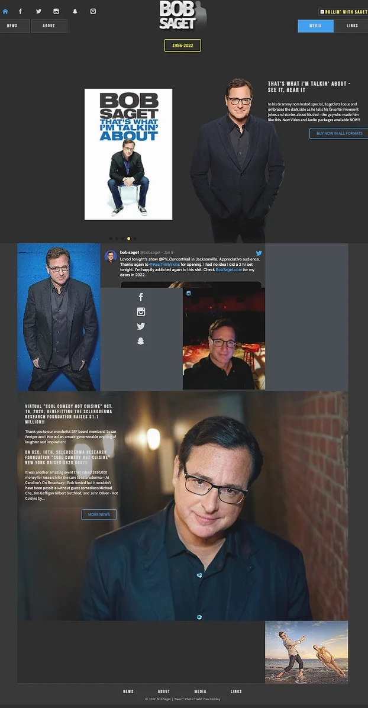

Context
We all know that there are variety of websites out there. The internet is quite wild, you know. In fact, currently, there are around 1.14 billion websites in the World. 17% of these websites are active, and 83% are inactive. Moreover, some of these websties can do wild AI powered 3 dimensional stuff. Sadly, this isn't the case for all the websites out there. Thus, for this project, I picked one of those poorly designed webssites and offered an alternative. Here is the story.
Why this particular Website
I chose this website because it has a simple enough user interface with some major usability, learnability, memorability, and accessibility problems. I believe that the root of these problems was poor planning of where each relevant section needed to be. Even though the material the website includes is of good quality, the design choices made for the website made it quite unintuitive to navigate through.
Spotting the Points of Improvements
Learnability
There are two navigation bars on the top. One of them includes mostly social media icons, but it also includes a home button and an email button. These aren’t intuitively related, and it becomes even more confusing with the second navigation bar that includes news, about, media, and links. The second navigation bar is divided into two halves and there is no particular reason to make such a division either. These factors are quite unintuitive and make it difficult to navigate through the website.
Memorability
Moving down from the top menu, the next sections don’t have titles. This makes it hard for a revisiting user to remember where to navigate when looking for a particular thing on the website such as his podcast.
Usability
The placement of the menus isn’t intuitive. On top of this, there are repeating elements(e.g. buttons) dispersed around the website that lead to the same place. Even though if placed wisely they could assist the user, they are causing more confusion, harming the usability of the website.
Accessibility
The web accessibility evaluation tool, Wave, surfaces some problems such as missing alternative text, low contrast, unordered list elements, redundant links, and missing headings at multiple levels. An example would be the “1956-2022” button. This looks like a clickable button that would take the visitor to a related page but it just loads the page again. Additionally, there are some overlapping elements. There is an Instagram and a Twitter post that is embedded in the second big section, but the Instagram post and an equal size div are placed on top of the Twitter post. This prevents the user to see some major parts of the content, making the website quite inaccessible.
Visual Redesign
Low-fidelity Wireframing

(This design is made for desktop, but for the project, we also did mobile and tablet versions.)
Visual Design Style Guide
This visual design guide displays the main colors and reusable components' different states.

High-Fidelity Prototyping
Below you can find the figma design made before creating the actual website.

Conclusion & Feedback
This project has thought me a lot. I found it quite useful to start with an already existing website and spotting what went wrong with it. A lot of times, it is quite hard to see what can go wrong without the mistakes actually being out there. This project made me think critically at every stage about every decision I made on the process.